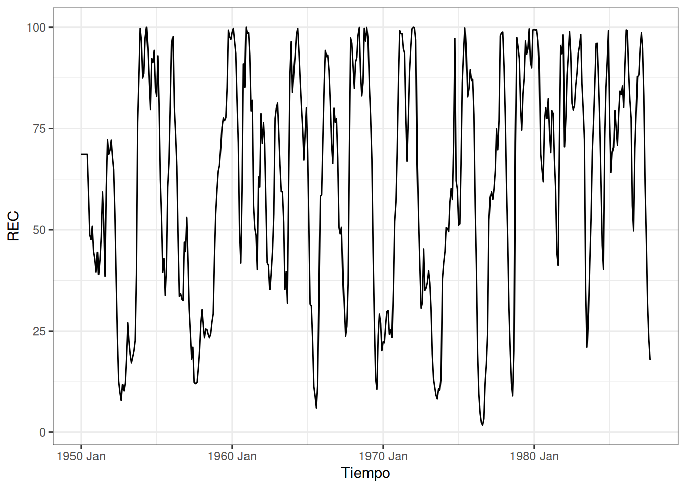

library(tidyverse)
library(ggplot2)
library(fpp3)
library(astsa)
library(timetk)1 Enfoque de Box-Jenkins
Carga de librerías
1.1 Ejemplos de series temporales
Serie de tiempo de Johnson & Johnson
jj_tibble <- tk_tbl(jj)
jj_tibble %>%
ggplot(aes(x = index, y = value)) +
geom_line() +
labs(x = "Tiempo", y = "Ganancia")+
theme_bw()Serie de tiempo de temperaturas globales
temp_tibble <- tk_tbl(gtemp_both)
temp_tibble %>%
ggplot(aes(x = index, y = value)) +
geom_line() +
labs(x = "Tiempo", y = "Anomalías de Temp.")+
theme_bw()Serie de tiempo del índice de Dow Jones:
djia_tibble <- tk_tbl(djia)
djia_tibble %>%
select(index,Close) %>%
ggplot(aes(x = index, y = Close)) +
geom_line() +
labs(x = "Tiempo", y = "Precio de Cierre")+
theme_bw()Y después de calcular los log-retornos:
djiar <- diff(log(djia$Close))[-1]
djiar_tibble <- tk_tbl(djiar)
djiar_tibble %>%
select(index,Close) %>%
ggplot(aes(x = index, y = Close)) +
geom_line() +
labs(x = "Tiempo", y = "Precio de Cierre")+
theme_bw()Serie de tiempo del Niño y la población de peces:
soi_tibble <- tk_tbl(soi) %>% rename(soi = value)
soi_tsibble <- soi_tibble %>% mutate(index = yearmonth(index)) %>%
as_tsibble(index = index)
rec_tibble <- tk_tbl(rec) %>% rename(rec = value)
rec_tsibble <- rec_tibble %>% mutate(index = yearmonth(index)) %>%
as_tsibble(index = index)
soi_tsibble %>%
ggplot(aes(x = index, y = soi)) +
geom_line() +
labs(x = "Tiempo", y = "SOI")+
theme_bw()rec_tsibble %>%
ggplot(aes(x = index, y = rec)) +
geom_line() +
labs(x = "Tiempo", y = "REC")+
theme_bw()
1.2 Gráficos de la función de autocorrelación estimada.
Siguiendo este último ejemplo, vamos a calcular el ACF de ambas series de SOI y REC:
ACF_soi <- soi_tsibble %>% ACF(soi,lag_max = 24)
soi_tsibble %>% ACF(soi,lag_max = 24) %>%
autoplot() +
theme_bw()+labs(x = "Lag", y = "ACF")rec_tsibble %>% ACF(rec,lag_max = 24) %>%
autoplot() +
theme_bw()+labs(x = "Lag", y = "ACF")Noten que en la primera línea del codigo anterior se extrae directamente el ACF de la serie SOI. A continuación el CCF de ambas series:
soi_rec_tsibble <- soi_tsibble %>% left_join(rec_tsibble,by = "index")
soi_rec_tsibble %>% CCF(x = soi, y = rec, lag_max = 24) %>%
autoplot() +
theme_bw() +
labs(x = "Lag", y = "CCF")1.3 Análisis exploratorio de series de tiempo
1.3.1 Descomposición de componente trigonométrico:
set.seed(1492)
num <- 120
t <- 1:num
X <- ts(2*cos(2*pi*t/12) + rnorm(120), frequency = 12)
Y <- ts(2*cos(2*pi*(t+5)/12) + rnorm(120), frequency = 12)
Yw <- resid(lm(Y ~ cos(2*pi*t/12) + sin(2*pi*t/12)))
X_df <- data.frame(
index = time(X),
value = as.numeric(X),
series = "X"
)
Yw_df <- data.frame(
index = time(Y),
value = as.numeric(Yw),
series = "Yw"
)
combined_df <- bind_rows(X_df, Yw_df)
combined_tsibble <- as_tsibble(combined_df, index = index, key = series)
ggplot(combined_tsibble, aes(x = index, y = value)) +
geom_line() +
facet_wrap(~series, scales = "free_y") + # Facet plot with free y-axis scales
labs(title = "Time Series Plot",
x = "Time",
y = "Value") +
theme_minimal()Con lo cual se compara una de las dos series originales con los residuos después de haberle ajustado un componente triginométrico.
1.3.2 Descomposición de tendencia a través de regresión lineal
chicken_tibble <- tk_tbl(chicken)
chicken_tsibble <- as_tsibble(chicken, index = time(chicken)) %>%
rename(chicken = value)
fit_pollo <- chicken_tsibble %>%
model(lm = TSLM(chicken ~ trend()))
model_summary <- glance(fit_pollo)
print(model_summary)# A tibble: 1 × 15
.model r_squared adj_r_squared sigma2 statistic p_value df log_lik AIC
<chr> <dbl> <dbl> <dbl> <dbl> <dbl> <int> <dbl> <dbl>
1 lm 0.917 0.917 22.1 1974. 2.83e-98 2 -533. 561.
# ℹ 6 more variables: AICc <dbl>, BIC <dbl>, CV <dbl>, deviance <dbl>,
# df.residual <int>, rank <int>model_coefficients <- tidy(fit_pollo)
print(model_coefficients)# A tibble: 2 × 6
.model term estimate std.error statistic p.value
<chr> <chr> <dbl> <dbl> <dbl> <dbl>
1 lm (Intercept) 58.6 0.703 83.3 1.54e-144
2 lm trend() 0.299 0.00674 44.4 2.83e- 98residuals_df <- augment(fit_pollo) %>%
select(index, .resid) %>%
rename(residuals = .resid)
ggplot(residuals_df, aes(x = index, y = residuals)) +
geom_line() +
labs(title = "Residuals of the Linear Model",
x = "Time",
y = "Residuals") +
theme_minimal()acf_residuals <- acf(residuals_df$residuals, plot = FALSE)
acf_df <- data.frame(
lag = acf_residuals$lag,
acf = acf_residuals$acf
)
ggplot(acf_df, aes(x = lag, y = acf)) +
geom_bar(stat = "identity") +
labs(title = "ACF of Residuals",
x = "Lag",
y = "ACF") +
theme_minimal()